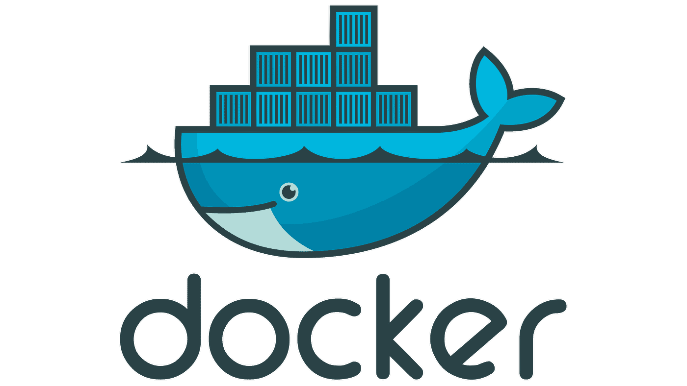

Data & AI
Empower Your Business with Automation, AI and Intelligent Solutions
Streamline Processes, Unlock Insights, and Innovate with Tailored Data & AI Expertise
My Services
Data Analytics and Reporting
Data collection, cleaning, and preprocessing.
Exploratory data analysis (EDA).
Generating visual reports and dashboards.
Automation of data pipelines.
Automation and Workflow Optimization
Streamline workflows with automation scripts.
Integrate AI models into your processes.
Combine scraping and APIs for advanced automation.

Machine Learning and AI Development
Predictive modeling and analytics.
Building and deploying machine learning models.
Optimize deep learning models.
Large Language Models (LLMs) implementation and fine-tuning.
Computer Vision and Image Processing
Object detection and keypoint detection.
Video processing for event detection and analytics.
Semantic Segmentation